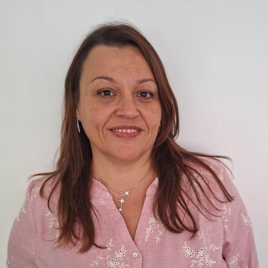

Conseil en croissance · PME tech
Dessinons votre croissance.
Pour les CEO de PME tech de 20 à 200 salariés en transition : diagnostic, nouveau modèle, déploiement jusqu'à l'autonomie.
01La méthode
Dans une PME Tech, la technique, le commercial et la direction regardent rarement le même tableau.
- 01
Technologie
Ce que votre robot, votre logiciel ou votre drone change chez le client, dit dans les termes qu'un acheteur industriel ou public sait défendre en interne.
- 02
Marché
Qui achète, qui décide, qui peut bloquer. Les cycles sont longs et les décideurs nombreux : il faut choisir les segments où votre offre gagne vraiment.
- 03
Croissance
Le modèle commercial, l'équipe et les priorités. Un plan à 90 jours pour démarrer, des progrès mesurés ensuite.
Relier les trois, pour décider et agir.
Une fois les trois alignés, les arbitrages se simplifient : vous savez quoi vendre, à qui, et avec quels moyens.
Voir les offres02Offres
Conseil pour la direction, formation pour les équipes.
Pour la direction
Conseil
Du diagnostic au nouveau cap, en trois étapes que vous pouvez engager séparément.
- 01Diagnostiquer
- 02Concevoir
- 03Déployer
Pour les équipes commerciales
Formation
Deux parcours appliqués à une affaire ou un compte réel, avec un suivi sur le terrain.
- 01Ventes complexes B2B
- 02Comptes stratégiques
Parlons de votre projet.
Un premier échange pour poser votre situation et voir comment avancer.
